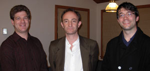

|
The Failures of the ‘New’ Old Union
Like many other students, I was excited to hear that Old Union would be renovated and transformed from a boring set of offices into a real student union. While Tresidder certainly has its uses, it’s not much of a place for students to gather for anything but official club meetings or a meal at Subway.
To Pay or Not to Pay: Contrasting Views on Stanford’s New Financial Aid Policy
On February 20, Stanford University announced a new financial aid policy dramatically increasing the eligible amount of aid for middle-income families. The announcement comes as the latest in a series of policy revisions over the past three years designed to ease the burden of paying a tuition averaging $47,000 a year and to ensure that no high school student considering applying to Stanford decides not to because of cost.
Arts Under Review
The latest in cinema, the visual arts, music, and performance.
The Heart of the Matter: Illegal Immigration
Arguing that a pathway to citizenship for illegal immigrants is a good idea is Amado Padilla, Professor of Psychological Studies in Education, Stanford University. Arguing against such a pathway is Vernon Briggs, Emeritus Professor of Labor Economics at the School of Labor and Industrial Relations, Cornell University.
Stanford Hosts Forum on Religion and the Presidency
On Friday, February 21, three scholars met for a forum on one of the most controversial presidential issues of our time: religion. The Religious Studies Department hosted the annual Howard M. Garfield Forum for Undergraduates on the topic of “Religion and the Presidency.”
Muslim Scholar Details Oppression of Women in Islamic Culture
Islam’s poor treatment of women has become a very contentious issue in recent years, both inside and outside of the Muslim community. From honor killings to polygamy, Islamic culture seems to place men on a higher level than women in almost every respect, raising doubts about Islam’s compatibility with contemporary egalitarian societies.
ONLINE EXCLUSIVE: Abizaid Talks National Security at Berkeley
General John Abiziad, decorated veteran of the U.S. Army and a Distinguished Visiting Fellow at the Hoover Institution, delivered the Fleet Admiral Chester W. Nimitz Memorial Lecture on Tuesday, March 11, in the heart of Berkeley.
The Brothers Castro
Half a century of Fidel Castro is enough for anyone. Cubans, however, must surely lament that he had so easy a replacement, and with the same name, no less. The official stepping down of Fidel in Cuba is not necessarily in and of itself huge news – Raul, his brother, has been firmly in power for about a year now, anyhow.
World News in Brief
Iran’s mid-March parliamentary elections featured the usual repressive tactics employed by insecure dicators everywhere, with reformist candidades disqualified in large numbers ahead of the polls. While Ahmadinejad yes-men appear to have maintained a majority, there may yet be a silver lining to this news.
Smoke Signals
We may not always agree with administration decisions, but for the determined student, Stanford is not a bad place to learn. We’ll busy ourselves in the Hoover archives and following in the steps of Mr. Buckley as we wait for administrators to come around.
|
ONLINE EXCLUSIVE - Counterinsurgency: Predictions and Prescriptions
On April 8-9, Gen. David Petraeus, commander of American forces in Iraq, and Ambassador Ryan Crocker will testify to Congress on the state of the war. Over the past year, Coalition and Iraqi forces have implemented a “clear, hold, and build” strategy, nicknamed “the surge” due to the increase of roughly 30,000 troops that made it possible.
Clean, Current, and Comfortable?
With John McCain closing in on the 1,191 delegates he needs to secure the Republican nomination for president, talk among politicos across the country has turned to whom the Arizona senator should tap as his running mate.
Can Conservatives Support Barack Obama?
Retired Dartmouth Professor Jeffery Hart is a living conservative legend. In 1980, The Dartmouth Review was founded in his living room. Without his efforts, there would be probably no modern conservative campus movement, no Dinesh D’Souza, no Stanford Review. And who is Professor Hart supporting for president in the 2008 election? Barack Obama.
Kosovo’s Independence Leaves World Worried
The Balkans, ever the powder keg of Europe, have produced yet another bombshell. Despite strong protests from Serbia and Russia, the war-torn region of Kosovo unilaterally declared independence on February 17. Though Kosovo’s Albanian majority greeted the long-awaited news with great celebrations, many fear that the independence of the tiny province will have drastic, far-reaching implications.
Stanford Men’s Basketball Finishing up Best Regular Season in Four Years
Stanford came into the season ranked number 21 in the USA Today/ESPN Poll. With a relatively young team, Stanford was hoping to build on last year’s experience and make a run at the Pac-10 Championship this year. But by the end of fall quarter, Stanford basketball was looking like it was missing something.

History and Political Science Departments Square Off in Friendly Debate
On February 21, Stanford professors Kenneth Schultz and Thomas Mullaney of the political science and history departments, respectively, faced off in a friendly debate on the merits of both disciplines. Nearly 40 students crammed in to the small Robinson House lounge to hear the professors tackle an oft joked about but seldom discussed question: just which is the better discipline, history or political science?
Never Surrender: A Novel of Winston Churchill by Michael Dobbs
As much as I can remember from my high school history classes, Winston Churchill was a great leader who was integral to saving Britain from defeat at the hands of Hitler’s Nazi war machine. He provided the necessary change of leadership so that the government, and the nation as a whole, could make the switch from appeasing Hitler under Neville Chamberlain to actively fighting the Third Reich.
ONLINE EXCLUSIVE: Persian Awareness Month?
March was a month of high activity for Stanford’s Iranian Studies Program, led by the popular political science professor Abbas Milani, a research fellow at the Hoover Institution.
Archbishop of Canterbury Ready for Islamic Law
Islam’s traditional code of laws, or shari’ah, seems to be constantly in the news. From criticism of human rights violations in Saudi Arabia and Iran, whose legal systems are closely based on shari’ah, to calls for its implementation in Western countries, questions persist about the viability of such a system in the modern world.
Editor’s Note: Academia vs. Blood, Sweat, and Tears
With finals week approaching, many of us at The Review are preparing term papers and final essays for our classes. I wrote one such paper recently: a critical analysis of three assigned books on the Bush administration and the War in Iraq.
|